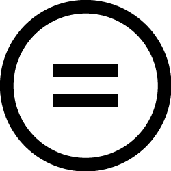

03. Direitos Autorais
03. Direitos Autorais03. Direitos Autorais
Domínio Público
No decorrer dos anos, o prazo de proteção das obras amparadas por Direitos Autorais tendem a diminuir até cair em Domínio Público, ou seja, transcorrido o seu tempo de proteção, um conjunto de obras culturais, científicas, tecnológicas, etc. passam a ser de livre uso comercial por terceiros sem necessidade de pedir autorização ou remuneração ao autor ou aos titulares.
Existe até uma imagem/símbolo que é utilizada para indicar se uma obra está no domínio público. Veja ao lado.
O tempo de duração da proteção do direito de autor é estabelecido pela legislação de cada país. No Brasil, o direito de autor sobre uma obra protegida “caduca” setenta anos após a morte do criador intelectual, mesmo que a obra só tenha sido publicada ou divulgada após a morte do autor. No caso de obras coletivas, fotográficas, audiovisuais e pseudônimas, o tempo também é de setenta anos, porém, contados a partir da primeira publicação ou divulgação da obra.
Já no caso de obras feitas em co-autoria, o Artigo 42, da LDA, estabelece que o prazo de duração começa a contar após o falecimento do último dos co-autores. Assim:
O que, afinal, está em domínio público no nosso país?
Atualmente estão em domínio público no Brasil:
- As obras dos autores falecidos até 1942;
- No caso de co-autores, deve-se contar da morte do último dos co-autores;
- As fotografias divulgadas publicamente até 1942;
- As obras audiovisuais divulgadas publicamente até 1942;
- As obras coletivas divulgadas publicamente até 1942;
- As obras anônimas ou pseudônimas divulgadas publicamente até 1942, que não tiverem seus autores conhecidos até o início do domínio público;
- As obras de autores que faleceram sem deixar herdeiros.
De acordo com a Lei de Direitos Autorais, compete ao Estado a defesa da integridade e da autoria da obra caída em domínio público, neste caso, o fato do tempo de proteção da obra ter se extinguido não significa que qualquer pessoa pode fazer o uso que bem entender dela, pois apesar de tais obras não serem mais amparadas pelos direitos patrimoniais, ainda, são objeto de direitos morais.
Com a finalidade de propor a democratização e o compartilhamento de conhecimento, o Ministério da Educação lançou, em 2004, o "Portal Domínio Público”. O objetivo do site é colocar à disposição dos usuários da Internet, uma biblioteca virtual composta por inúmeras obras - em diversos formatos (textual, imagem, som e vídeo) - que se encontram em domínio público ou obras que contam com a devida licença por parte dos titulares dos direitos autorais.
É preciso destacar, novamente, que os direitos autorais podem ser limitados em razão de outros direitos fundamentais do cidadão, como o Direito à Educação, à Cultura, à Comunicação e à Informação, assim, nesses casos, o Estado reconhece que se pode fazer o uso de determinada obra autoral sem ela ter caído em Domínio Público ou sem a autorização e remuneração aos titulares durante ou não a vigência do prazo de proteção imposto pela Lei de Direitos Autorais.
Deste modo, segundo o Artigo 46, não constitui ofensa ou crime aos direitos autorais se:
- a reprodução:
- na imprensa diária ou periódica, de notícia ou de artigo informativo, publicado em diários ou periódicos, com a menção do nome do autor, se assinados, e da publicação de onde foram transcritos;
- em diários ou periódicos, de discursos pronunciados em reuniões públicas de qualquer natureza;
- de retratos, ou de outra forma de representação da imagem, feitos sob encomenda, quando realizada pelo proprietário do objeto encomendado, não havendo a oposição da pessoa neles representada ou de seus herdeiros;
- de obras literárias, artísticas ou científicas, para uso exclusivo de deficientes visuais, sempre que a reprodução, sem fins comerciais, seja feita mediante o sistema Braille ou outro procedimento em qualquer suporte para esses destinatários;
- a reprodução, em um só exemplar de pequenos trechos, para uso privado do copista, desde que feita por este, sem intuito de lucro;
- a citação em livros, jornais, revistas ou qualquer outro meio de comunicação, de passagens de qualquer obra, para fins de estudo, crítica ou polêmica, na medida justificada para o fim a atingir, indicando-se o nome do autor e a origem da obra;
- o apanhado de lições em estabelecimentos de ensino por aqueles a quem elas se dirigem, vedada sua publicação, integral ou parcial, sem autorização prévia e expressa de quem as ministrou;
- a utilização de obras literárias, artísticas ou científicas, fonogramas e transmissão de rádio e televisão em estabelecimentos comerciais, exclusivamente para demonstração à clientela, desde que esses estabelecimentos comercializem os suportes ou equipamentos que permitam a sua utilização;
- a representação teatral e a execução musical, quando realizadas no recesso familiar ou, para fins exclusivamente didáticos, nos estabelecimentos de ensino, não havendo em qualquer caso intuito de lucro;
- a utilização de obras literárias, artísticas ou científicas para produzir prova judiciária ou administrativa;
- a reprodução, em quaisquer obras, de pequenos trechos de obras preexistentes, de qualquer natureza, ou de obra integral, quando de artes plásticas, sempre que a reprodução em si não seja o objetivo principal da obra nova e que não prejudique a exploração normal da obra reproduzida nem cause um prejuízo injustificado aos legítimos interesses dos autores.
Artigo 47
São livres as paródias e paráfrases que não forem verdadeiras reproduções da obra originária nem lhe implicarem descrédito.
Artigo 48
As obras situadas permanentemente em logradouros públicos podem ser representadas livremente, por meio de pinturas, desenhos, fotografias e procedimentos audiovisuais.
Além disso, estamos diante de novas questões impostas pela evolução tecnológica, pois além de receptores e consumidores de bens culturais, informações, músicas, filmes, etc. disponíveis na rede, nos tornamos autores-produtores, ou seja, também, produzimos uma série de obras intelectuais, culturais e artísticas e as divulgamos na Internet.
A cultura digital tem modificado a relação dos usuários e dos autores-produtores com as obras intelectuais. Hoje, é possível, por meio da Internet, copiar, colar, adaptar, modificar e tornar público obras próprias e de terceiros e isto é, sem dúvida, um desafio, pois a lei brasileira ainda é restritiva a este respeito ou simplesmente não aborda as especificidades impostas pelas possibilidades tecnológicas e a atuação da sociedade neste processo.
No entanto, segundo Pedro Paranaguá e Sérgio Branco (2009, p. 90) “nem sempre a internet pode ser considerada uma ameaça aos artistas e à proteção dos direitos autorais. Muitas vezes é uma aliada”. Pois, a “era da conectividade”, “da interação” e “da colaboração criativa”, também, possibilita ao cidadão, aos artistas e demais produtores a exercerem seus direitos culturais.
Assim, a cada dia estamos caminhando para diversos mecanismos e projetos de licenças públicas e criações colaborativas com a finalidade de aumentar o domínio público sem o risco de processos judiciais. É o caso do software livre e das licenças Creative Commons.
O Creative Commons permite, de forma simplificada, que o autor tenha “alguns direitos reservados”, ao invés de “todos os direitos reservados”, autorizando assim toda a sociedade a usar sua obra segundo os termos das licenças públicas por ele adotadas. Essa solução protege os direitos do autor, ao mesmo tempo que permite, mediante instrumento juridicamente válido, o acesso à cultura e o exercício da criatividade dos interessados em usar a obra [artística, cultural, científica] licenciada. (PARANAGUÁ; BRANCO, 2009, p.115).
Destacamos no quadro abaixo as principais licenças Creative Commons:
Atribuição (BY): Os licenciados têm o direito de copiar, distribuir, exibir e executar a obra e fazer trabalhos derivados dela, conquanto que dêem créditos devidos ao autor ou licenciador, na maneira especificada por estes. |
|
 |
Uso Não comercial (NC): Os licenciados podem copiar, distribuir, exibir e executar a obra e fazer trabalhos derivados dela, desde que sejam para fins não-comerciais. |
|  | Não a obras derivadas (ND): Os licenciados podem copiar, distribuir, exibir e executar apenas cópias exatas da obra, não podendo criar derivações da mesma. |
Compartilhamento pela mesma licença (SA): Os licenciados devem distribuir obras derivadas somente sob uma licença idêntica à que governa a obra original. |
Fonte: Wikipedia
Existem, ainda, mais duas licenças que tiveram origem no Brasil e destinam-se ao licenciamento de software livre no nosso país. São a General Public License (GPL) e a Lesser General Public License (LGPL).
Para finalizar, de acordo com Lemos (2005), as licenças Creative Commons podem ser utilizadas para diversas obras, tais como, músicas, filmes, textos, fotos, blogs, banco de dados, software ou outras obras passíveis de proteção por direito autoral.
Diante do exposto, depreende-se que com o advento das novas tecnologias da informação e comunicação (TICs) devemos estar cada vez mais preparados para lidar com temas ligados ao impacto das novas tecnologias na propriedade intelectual, nos direitos autorais, no patenteamento dos saberes tradicionais e, entre outros, na biopirataria.